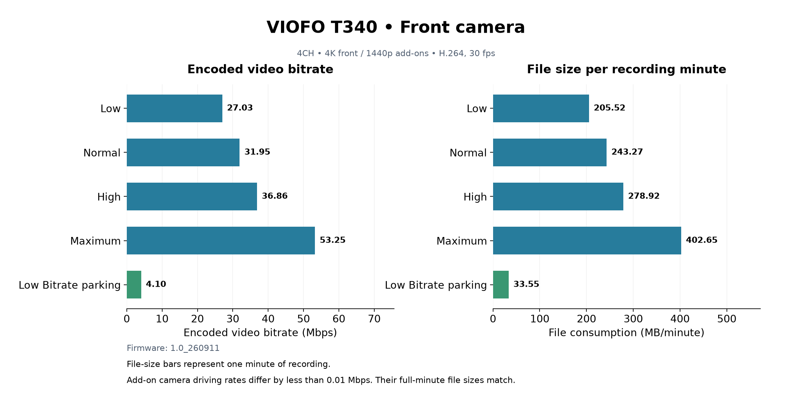
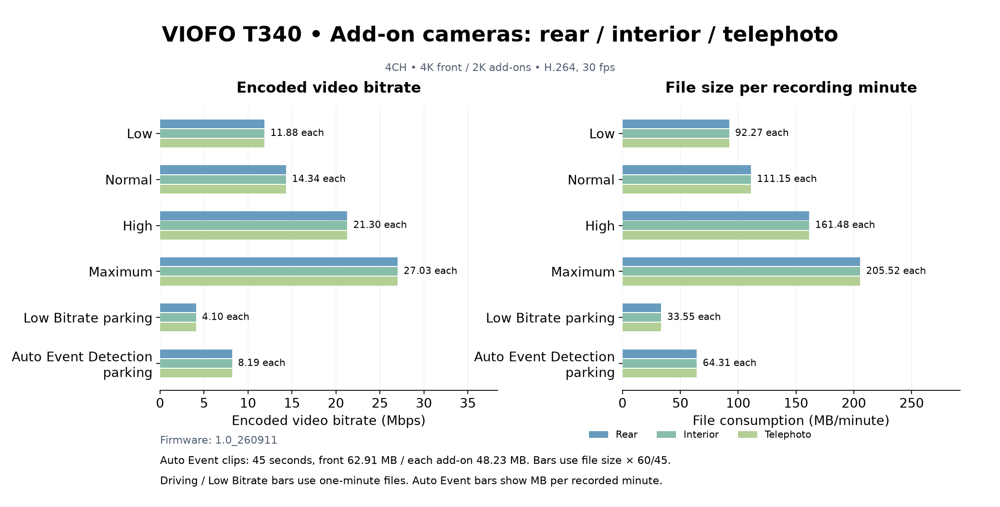
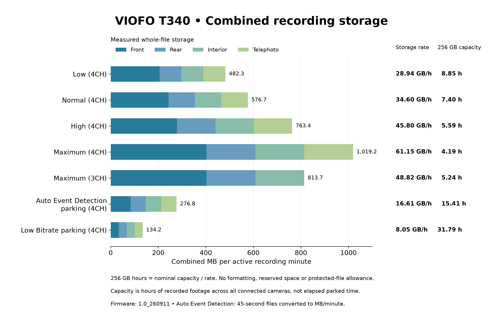
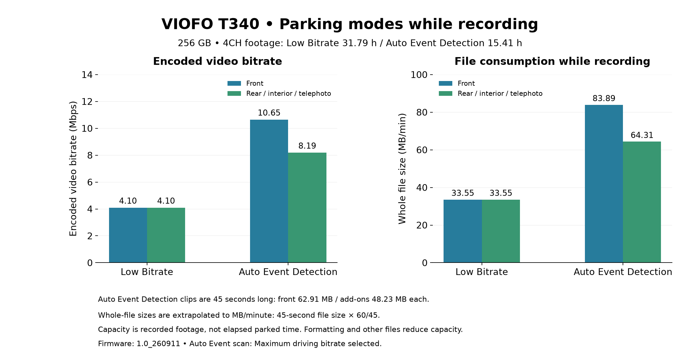

Measured app-submission metadata reviewed 2026-10-08. Four-channel driving comparisons, separately confirmed three-channel Maximum, and distinct parking settings.
Normal storage is a video-only estimate. Other main driving/file bars use paired full-minute clips. Maximum is a representative selected configuration from a mixed-rate card. MB and GB are decimal.




| Setting | Cameras | MB/min | GB/hour | 256 GB recorded hours | Storage evidence |
|---|---|---|---|---|---|
| Low | 4 | 482.34 | 28.94 | 8.85 | Paired files |
| Normal | 4 | 562.11 | 33.73 | 7.59 | Video-only estimate |
| High | 4 | 763.36 | 45.80 | 5.59 | Paired files |
| Maximum | 4 | 1019.22 | 61.15 | 4.19 | Paired files |
| Low Bitrate parking | 4 | 134.22 | 8.05 | 31.79 | Paired files |
| Maximum 3CH | 3 | 813.69 | 48.82 | 5.24 | Paired files |
| Auto Event parking | 4 | 276.82 | 16.61 | 15.41 | Paired files |
Representative full 60-second paired files; Auto Event uses typical paired 45-second files normalized to one active recording minute. Normal uses midpoint of encoded-video summary range and excludes audio/container/padding. Maximum card contains mixed rates: select the measured full-minute Maximum-sized files, not a card-wide average.